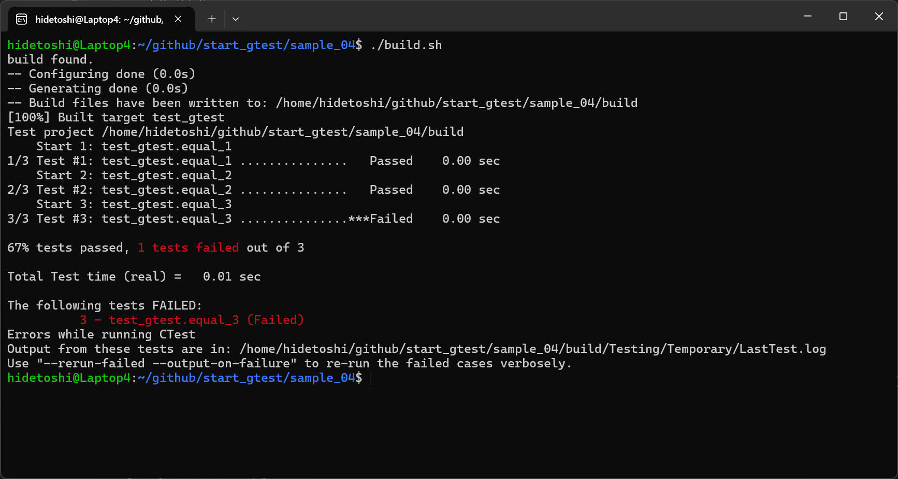
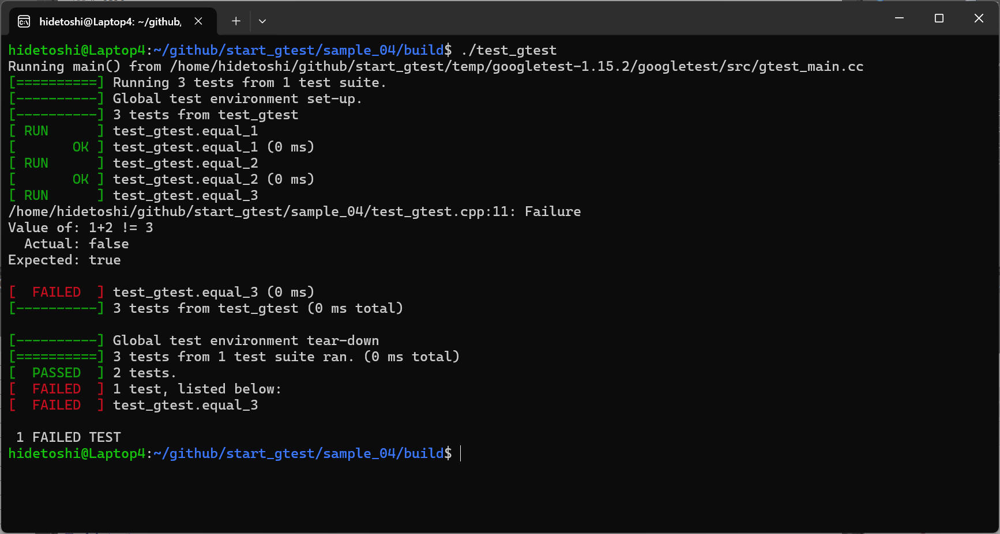

CTestは、CMakeプロジェクトで使われるテストランナーです。CTestを利用することで、CMakeプロジェクト内でユニットテストやその他の自動テストを簡単に実行できます。
CTest には主に以下の機能があります。
| コンパイラ : | g++, | 13.3.0 |
| OS : | Ubuntu (WSL), | 24.04 |
CTestは、特に継続的インテグレーション（CI）環境でよく使用され、プロジェクトのコード品質を保つために重要なツールです。
CTestを使ったテストの具体的な手順の例を説明します。
cmake_minimum_required(VERSION 3.10) project(MyProject) # テストの有効化 enable_testing() # テスト実行ファイルを登録 add_executable(my_test my_test.cpp) # テストを登録 add_test(NAME MyTest COMMAND my_test)
#include <iostream>
#include <cassert>
int main() {
int a = 2 + 2;
assert(a == 4);
std::cout << "Test passed!" << std::endl;
return 0;
}
#!/bin/bash
build_dir=build
# $build_dir が存在するか確認
if [ -e $build_dir ]; then
echo "$build_dir found."
else
echo "$build_dir NOT found."
mkdir $build_dir
echo "Create $build_dir"
fi
cd $build_dir
# build
cmake ..
make
# test
ctest
Test project /home/hidetoshi/github/start_gtest/sample_03/build
Start 1: MyTest
1/1 Test #1: MyTest ........................... Passed 0.00 sec
100% tests passed, 0 tests failed out of 1
Total Test time (real) = 0.00 sec
#include <iostream>
#include <cassert>
int main() {
int a = 2 + 2;
assert(a == 4);
std::cout << "Test passed!" << std::endl;
return 1;
}
Test project /home/hidetoshi/github/start_gtest/sample_03/build
Start 1: MyTest
1/1 Test #1: MyTest ...........................***Failed 0.00 sec
0% tests passed, 1 tests failed out of 1
Total Test time (real) = 0.00 sec
The following tests FAILED:
1 - MyTest (Failed)
Errors while running CTest
Output from these tests are in: /home/hidetoshi/github/start_gtest/sample_03/build/Testing/Temporary/LastTest.log
Use "--rerun-failed --output-on-failure" to re-run the failed cases verbosely.
以上で CTest について簡単な使用方法紹介を終了します。
add_test の仕様は以下のようになっています。
add_test(NAME <name> COMMAND <command> [<arg>...]
[CONFIGURATIONS <config>...]
[WORKING_DIRECTORY <dir>])
add_test — CMake 3.0.2 Documentation
| プロパティ | 説明 |
|---|---|
| NAME |
必須 <name> にはテスト名を指定します。これはテストの識別子となりますので重複することはできません。 |
| COMMAND |
必須 <command> にはテストを実行するコマンドとその引数を指定します。 |
| CONFIGURATIONS |
任意指定 テスト実行時のテスト構成(Release, Debug など)が <config> で指定した値のいずれかの時のみ実行します。 |
| WORKING_DIRECTORY |
任意指定 <dir> にはテストコマンドの実行ディレクトリを指定します。初期値はビルドディレクトリのルートです。 |
使用例を以下に示します。CMakeLists.txt ファイルの記載例です。
cmake_minimum_required(VERSION 3.10)
project(MyProject)
# テストの有効化
enable_testing()
# テスト実行ファイルを登録
add_executable(unit_test hoge_test.cpp foo_test.cpp)
# テストを登録
add_test(
NAME hoge_test # テスト名は hoge_test
COMMAND unit_test --only=mylib::hoge # mylib::hoge というテストのみ実行する
CONFIGURATIONS Release # テスト構成が Release のときのみ実行
WORKING_DIRECTORY ${PROJECT_BINARY_DIR}/tmp # 実行ディレクトリは ${PROJECT_BINARY_DIR}/tmp
)
CONFIGURATION の実際の指定は cmake -DCMAKE_BUILD_TYPE=Release . というような感じで行います。
add_test() コマンドで追加したテストはそれぞれプロパティを持っており、これをテストプロパティと呼んだりします。このテストプロパティはテストの実行に関する設定を行うことができ、これによって柔軟な実行が可能となります。set_property() および set_tests_properties() コマンドで設定できます。
実際の設定例を紹介します。"hoge_test" という名称のテストに対して LABELS として "hoge" を設定する例です。
set_property(TEST hoge_test PROPERTY LABELS hoge) set_tests_properties(hoge_test PROPERTIES LABELS hoge)
- set_property — CMake 3.0.2 Documentation
- set_tests_properties — CMake 3.0.2 Documentation
| プロパティ | 説明 |
|---|---|
| LABELS | プロパティにラベルとよばれるタグを付与することができます。これは、テストしたい実行ファイルを選択するときに使用することができます。また、テスト後にラベルごとに実行時間が集計されます。ラベルは複数持つことができ、リストとして格納されます。 |
| DEPENDS | 通常テストの実行順序は add_test() コマンドで追加した順序となりますが、このプロパティを設定すると指定されたテストの実行が終了してからテストを実行するようになります。これには複数指定可能でリストとして格納されます。 |
| ENVIRONMENT | このテストでだけ有効な環境変数を設定します。これは |
| RUN_SERIAL | CTest は登録されたテストを並列に実行できますが、このプロパティを設定すると、指定したテストとは並列に実行しなくなります。これには複数指定可能でリストとして格納されます。 |
| FAIL_REGULAR_EXPRESSION | このプロパティを設定すると、テストの出力が指定した正規表現にマッチする場合は失敗、そうでない場合は成功と判断されます。 |
| PASS_REGULAR_EXPRESSION | このプロパティは、FAIL_REGULAR_EXPRESSION プロパティと似ていますが、指定した正規表現にマッチする場合は成功、そうでない場合は失敗となります。 |
| SKIP_RETURN_CODE | このプロパティを設定すると、テスト実行コマンドの戻り値が指定した値だった場合は、テストをスキップしたと判断されます。 |
| TIMEOUT | このプロパティを設定すると、テストの実行時間が指定した値を超えると強制的に終了するようになります。値の単位は秒です。 |
CTest はテスト用の実行ファイル(テストバイナリ)が1つのテストとして認識されます。GoogleTest(GTest) のようなテストフレームワークの場合、１つのテストバイナリに複数のテストケースが含まれることが常です。CTest には GTest の各テストを１つのテストとして扱われるようにするためのサポート機能があるのでこれについて記載します。
| コンパイラ : | g++, | 13.3.0 |
| OS : | Ubuntu (WSL), | 24.04 |
| ライブラリ： | libgtest-dev, | noble 1.14.0-1 amd64 |
CMakeLists.txt ファイルの記載例です。
簡単に説明すると、include(GoogleTest)、enable_testing()
した後に (add_test() ではなく)
gtest_add_tests() でテストを追加する、という感じです。
これら機能は cmake 3.1 で導入され、3.9
以降ぐらいで現在の仕様になったらしいです。
# CMake のバージョンを設定
cmake_minimum_required(VERSION 3.13)
# プロジェクト名と使用する言語を設定
project(test_gtest CXX)
# GoogleTest requires at least C++14
set(CMAKE_CXX_STANDARD 14)
# test_gtest という実行ファイルを test_gtest.cpp から作成
add_executable(test_gtest test_gtest.cpp)
# gtest_main, gtest をリンクします
target_link_libraries(
test_gtest
gtest_main
gtest
)
# ctest を有効化
include(GoogleTest)
enable_testing()
gtest_add_tests(TARGET test_gtest)
test_gtest.cpp サンプルです。
#include <gtest/gtest.h>
TEST(test_gtest, equal_1){
EXPECT_EQ(1, 1);
}
TEST(test_gtest, equal_2){
EXPECT_EQ(1+1, 2);
}
TEST(test_gtest,equal_3){
EXPECT_TRUE( 1+2 != 3);
}
build.sh サンプルです。
#!/bin/bash
build_dir=build
# $build_dir が存在するか確認
if [ -e $build_dir ]; then
echo "$build_dir found."
else
echo "$build_dir NOT found."
mkdir $build_dir
echo "Create $build_dir"
fi
cd $build_dir
# build
cmake ..
make
# test
ctest
build.sh を実行した結果の様子を下図に示します。gtest のテスト項目3件を正しく認識できています。

参考： こちらは make で生成された test_gtest を実行した例です。テスト結果は同じですが異なる表示になります。

以上の結果から、複数の gtest を一括してテスト実行したい、というようなシチュエーションで ctest を使うと有効かもしれないと思いました。
本ページの情報は、特記無い限り下記 MIT ライセンスで提供されます。
| 2025-03-04 | - | 新規作成 |